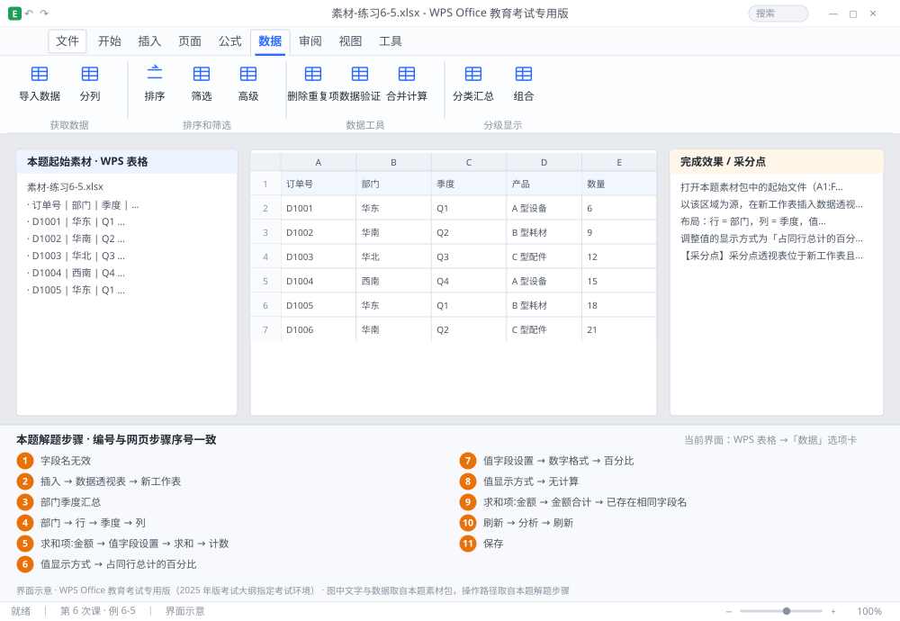

完成比对文档 · 例 6-5
透视表：部门×季度交叉表 + 占行总计百分比 + ¥格式 ｜ 第 6 次课 / WPS 表格 ｜ 网页：实操-表格3.html ｜ 考试环境：WPS Office 教育考试专用版（2025 年版考试大纲指定考试环境）
用途 本页按修订后的题目要求与解题步骤生成，是交卷自查的结果基准：
逐项列出每一步应出现的可复核结果，配合模拟操作截图与解题结果文件使用。
它不是素材包的一部分，不会预置答案动作；起始素材仍从本题素材包下载。
一、本题起始素材包
目录：练习素材/练习6-5-数据透视表/ ｜
下载包：练习素材/下载/练习6-5-数据透视表.zip
二、题目要求
- 打开本题素材包中的起始文件（A1:F21：日期、部门、产品、数量、单价、金额）。
- 以该区域为源，在新工作表插入数据透视表，命名为「部门季度汇总」。
- 布局：行 = 部门，列 = 季度，值 = 金额（求和）。
- 调整值的显示方式为「占同行总计的百分比」，数字格式为 0.0%。
- 复制一份透视表到下方，改回「求和」并把数字格式设为 ¥#,##0。
- 把「求和项:金额」字段标题改为「金额合计」。
- 修改源表任意一个金额，然后刷新透视表，确认结果更新。
- 保存为 学号-姓名-练习6-5.xlsx。
三、解题步骤（编号与下方核对表、截图编号一致）
- 检查源数据。确认 A1:F21 没有合并单元格、没有空行、首行是字段名。有合并单元格时透视表会报「字段名无效」。
- 插入透视表。点数据区任一单元格 →「插入」→「数据透视表」→ 区域自动识别为 A1:F21 → 位置选「新工作表」→ 确定。
- 重命名工作表。双击新工作表标签 → 输入「部门季度汇总」。
- 拖字段。右侧字段列表：把「部门」拖到「行」区、「季度」拖到「列」区、「金额」拖到「值」区。若源表没有「季度」列，可先用 ="Q"&ROUNDUP(MONTH(A2)/3,0) 建辅助列。
- 确认汇总方式。点值区的「求和项:金额」→「值字段设置」→ 汇总方式选「求和」。（若源列有空白，系统可能默认「计数」，要手动改。）
- 改显示方式。同一对话框 →「值显示方式」选项卡 → 下拉选「占同行总计的百分比」→ 确定。
- 设数字格式。「值字段设置」→「数字格式」→ 分类「百分比」→ 小数位数 1 → 确定（或自定义 0.0%）。
- 做第二份。复制整个透视表 → 粘贴到下方 → 在副本上把「值显示方式」改回「无计算」→ 数字格式改为自定义 ¥#,##0。
- 改字段标题。点中「求和项:金额」这个标题单元格 → 直接输入「金额合计」→ Enter。注意：若提示「已存在相同字段名」，在原名后加一个空格即可。
- 刷新。回源表改一个金额 → 回到透视表 → 右键 →「刷新」（或「分析」→「刷新」）。透视表不会自动更新，这一步是必考点。
- 保存。Ctrl+S。
四、完成效果 / 采分点
采分点透视表位于新工作表且命名为「部门季度汇总」 · 行为部门、列为季度、值为金额求和 · 第一份为「占同行总计的百分比」且格式 0.0% · 第二份为求和且格式 ¥#,##0 · 字段标题改为「金额合计」 · 刷新后数据同步
五、逐项完成核对表
| 步骤 | 关键操作路径 | 应出现的结果（可复核） |
|---|
| 1 | 检查源数据 | A1:F21、「字段名无效」 |
| 2 | 插入透视表 | 「插入」、「数据透视表」、A1:F21、「新工作表」 |
| 3 | 重命名工作表 | 「部门季度汇总」 |
| 4 | 拖字段 | 「部门」、「行」、「季度」、「列」、「金额」 |
| 5 | 确认汇总方式 | 「求和项:金额」、「值字段设置」、「求和」、「计数」 |
| 6 | 改显示方式 | 「值显示方式」、「占同行总计的百分比」 |
| 7 | 设数字格式 | 「值字段设置」、「数字格式」、「百分比」、0.0% |
| 8 | 做第二份 | 「值显示方式」、「无计算」 |
| 9 | 改字段标题 | 「求和项:金额」、「金额合计」、「已存在相同字段名」 |
| 10 | 刷新 | 「刷新」、「分析」 |
| 11 | 保存 | 保存 |
六、模拟操作截图

界面示意 · WPS Office 教育考试专用版 · 橙色编号与本题解题步骤序号一致；
图中文字与数据取自本题素材包，功能入口取自本题解题步骤。
核对方法：按网页解题步骤完成并另存自己的成稿后，逐行比对本表第 3 列的
参数、公式、区域、文件名与对象数量；再对照网页「完成效果 / 采分点」检查版式是否一致。